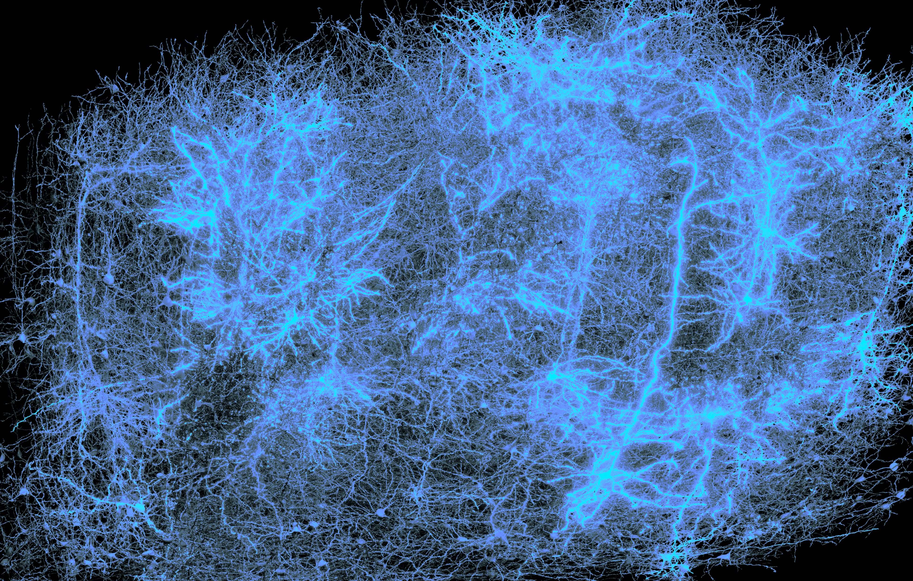

Tejidos neuronales, biocomputadoras
“Desde 2025, se puede comprar un ordenador cuyo componente más extraño no es un nuevo procesador, sino un cultivo de neuronas humanas vivas. El CL1, desarrollado por la empresa australiana Cortical Labs, se comercializa como un sistema de computación biológica e integra células neuronales sobre una matriz de electrodos. Esta permite estimularlas y registrar su actividad, mientras las mantiene en condiciones adecuadas mediante un sistema interno de soporte vital.”
Y es que los tejidos neuronales son una gran red de energía, que se puede transformar en electricidad, como si de diminutos cables se tratasen. Estas redes son conectomas.
Mueve el ratón · detente sobre una cruz
Ciberespacio
AMORE© 2026 ESD Gráfica Multimedia